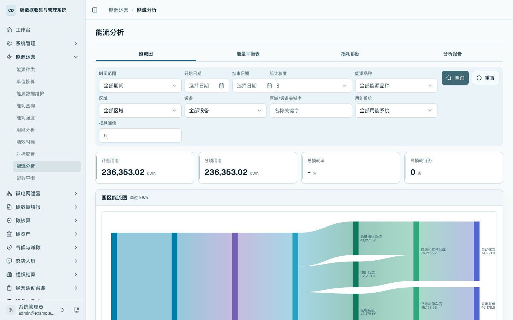
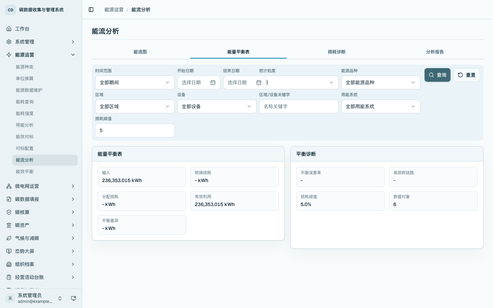
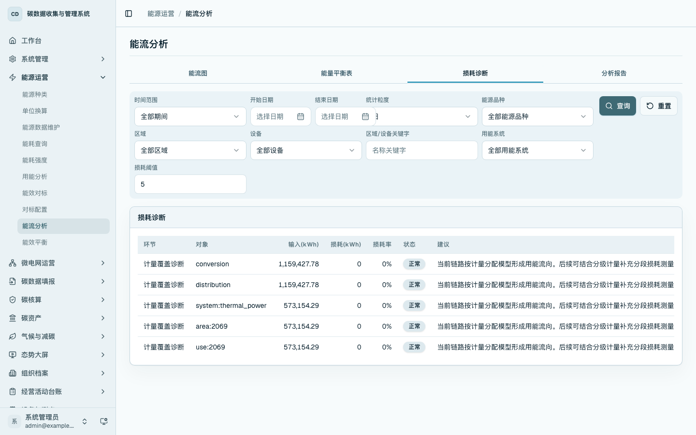
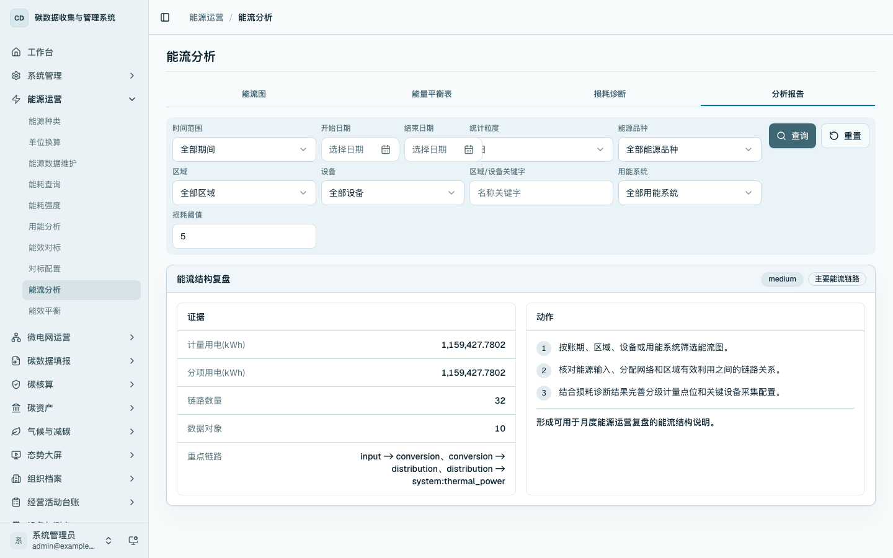

能流分析
本章说明如何查看能源从总表到区域、设备和用能系统的流向关系，并核对能量平衡表、损耗诊断和分析报告。能流分析用于回答“能源从哪里来、流向哪里、哪些链路存在损耗”。
菜单位置
- 首页工作台：在
/home的「能源运营」区域点击「能流分析」进入。 - 侧边栏：进入「能源运营 / 能流分析」，打开
/energy/flow。
能流图
进入 /energy/flow，默认打开「能流图」页签。页面顶部提供时间范围、统计粒度、能源品种、区域、设备、用能系统、区域关键字和损耗阈值筛选。点击「查询」后，系统按当前条件刷新能流图、平衡表、损耗诊断和分析报告。
「能流图」展示计量用电、分项用电、总损耗率和高损耗链路，并用图形呈现总表、区域、设备和用能系统之间的能量流向。下方「关键链路贡献」用于查看主要链路的电量贡献。

能量平衡表
切换到「能量平衡表」页签，查看能量输入、利用、损耗和诊断字段。该页用于从表格角度核对能流图中的输入、输出和损耗项目。

损耗诊断
切换到「损耗诊断」页签，查看各链路的输入电量、损耗电量、损耗率、状态和建议。用户可通过损耗阈值筛选不同敏感度下的高损耗链路。

分析报告
切换到「分析报告」页签，查看平台形成的能流分析条目。每条报告展示证据字段和动作建议，可用于运维复盘、节能专项沟通和后续整改跟踪。

操作要点
- 能流图用于理解总表、区域、设备和用能系统的流向关系。
- 能量平衡表用于核对输入、利用和损耗。
- 损耗诊断用于定位损耗率较高的链路。
- 分析报告用于沉淀本期能源流向和诊断结论。